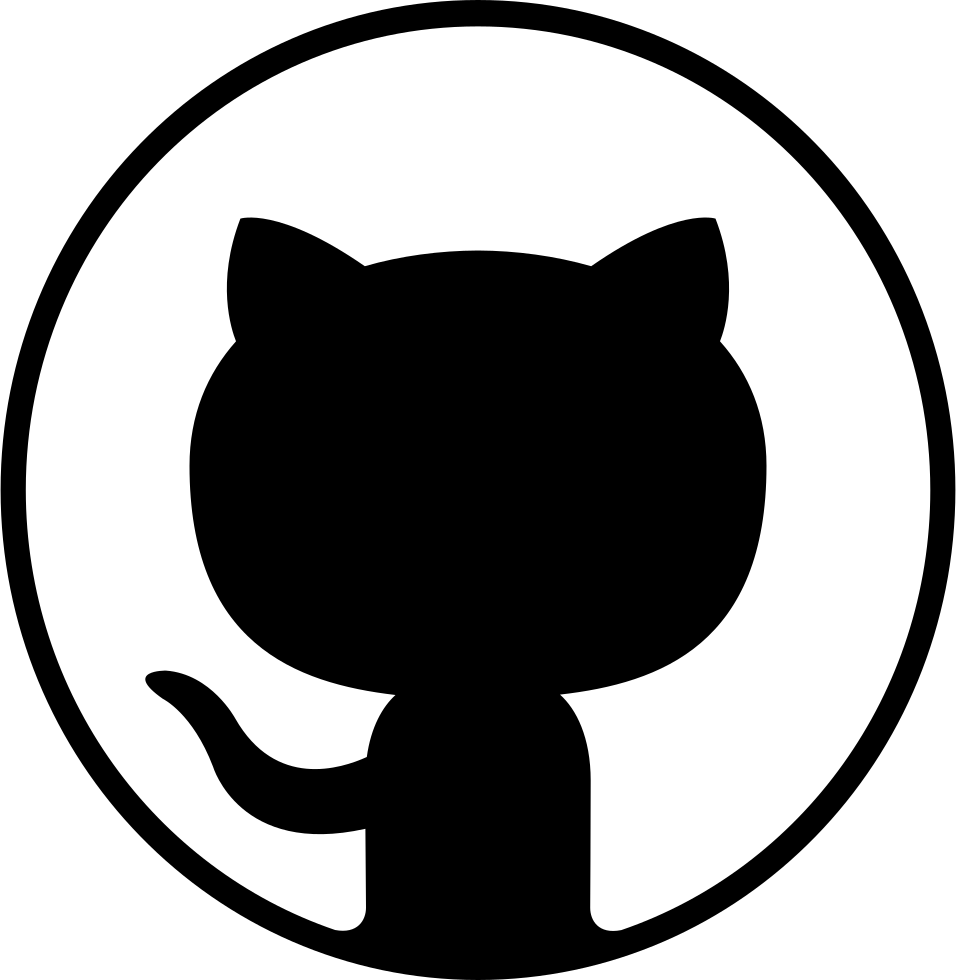

Simple site for the github community, detailing suspicious and malicious projects.
Key:
Green: hacking tools that are to be downloaded and used legally. these do not target github users.
Blue: closed source projects. this is a heresy against github and FOSS as a whole, doesn't mean its malware though, proceed with caution
Orange: suspected malware, cannot confirm nor deny the validity of the claim.
Red: 100% weapons grade thermonuclear malware made to steal and spy on unsuspecting github users for defarious goals.
stay safe friends :-)